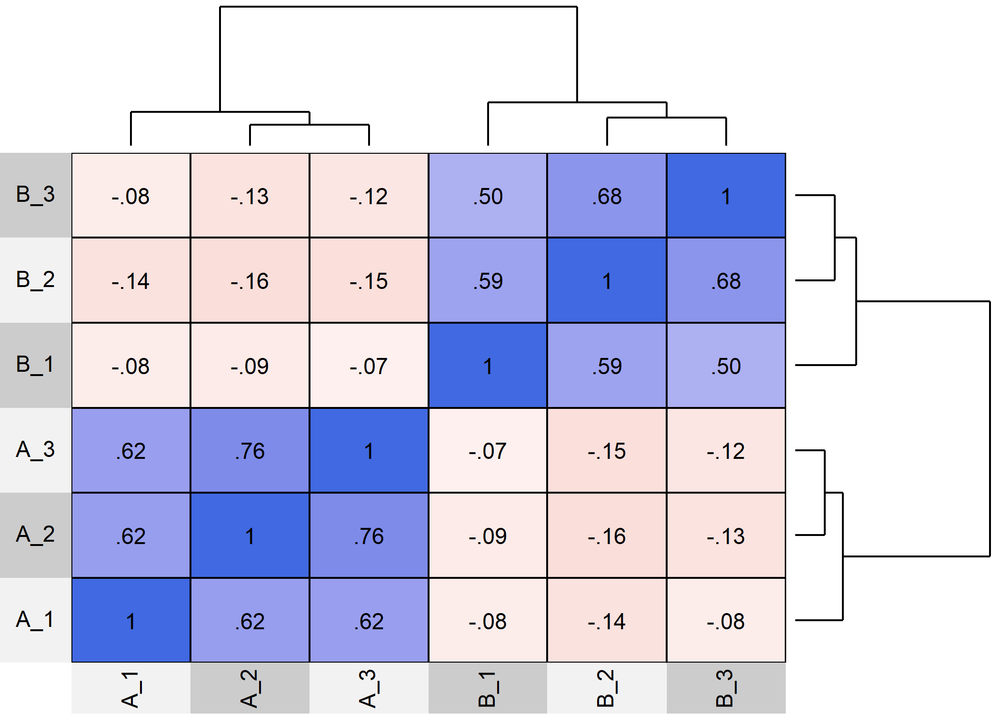

The WJSmisc package is set of functions I find convenient to have readily available to me.
Installation
You can install the development version from GitHub with:
# install.packages("remotes")
remotes::install_github("wjschne/WJSmisc")Example
I often need to create a normal distribution with a shaded region below a point.
library(simstandard)
model <- "
A =~ 0.71 * A_1 + 0.91 * A_2 + 0.85 * A_3
B =~ 0.65 * B_1 + 0.90 * B_2 + 0.75 * B_3
A ~~ -0.2 * B
"
d <- sim_standardized(
model,
latent = FALSE,
error = FALSE)
cor_heat(d, margins = 0.1)